C++语言
概述
C++是对C的拓展，C原有的语法C++都支持，并在此基础上拓展了一些语法：封装、继承、多态、模板等等。C++拓展新的语法是为了让使用更加方便、高效，这样就需要编译器多做了很多事情，接下来我们就需要一一学习这些概念。
封装
之前我们学习过结构体这个概念，那么结构体可以做参数传递吗？我们来看一下如下代码：
struct Student { int a; int b; int c; int d;};int Plus(Student s) { return s.a + s.b + s.c + s.d;}void main() { Student s = {1, 2, 3, 4}; int res = Plus(s); return;}上面这段代码是定义一个结构体，然后将该结构体传入Plus函数（将结构体成员相加返回），那么问题来了，结构体它是否跟数组一样，传递的是指针呢？来看一下反汇编代码：
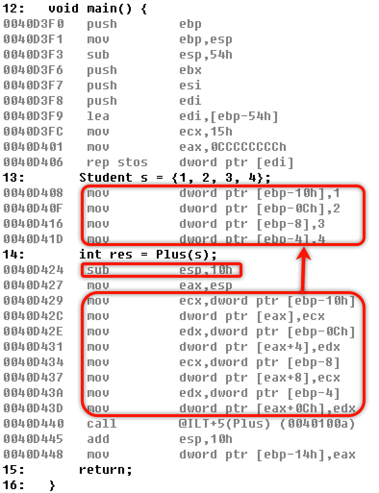
可以很清晰的看见，结构体作为参数传递时栈顶（ESP）提升了0x10（16个字节，也就是结构体的四个成员【int】的宽度），而后将ESP的值给了EAX，再通过EAX（ESP）将结构体的成员传入函数，结构体成员从左到右依次从栈顶向下复制进入堆栈。
也就是说当我们将结构体作为参数传递时与我们传整数什么的是没有本质区别的，唯一的区别就是传递结构体时不是使用的push来传递的，而是一次性的提升堆栈，然后mov赋值。
虽然我们可以使用结构体进行传参，但是这也存在一个问题，就是当我们使用结构体传参时，假设结构体有40个成员，那么就存在着大量的内存被复制，这样效率很低，是不推荐使用的。
那如果非要这样使用该怎么办呢？我们可以使用指针传递的方式来，修改一下代码：
struct Student { int a; int b; int c; int d;};int Plus(Student* p) { return p->a + p->b + p->c + p->d;}void main() { Student s = {1, 2, 3, 4}; int res = Plus(&s); return;}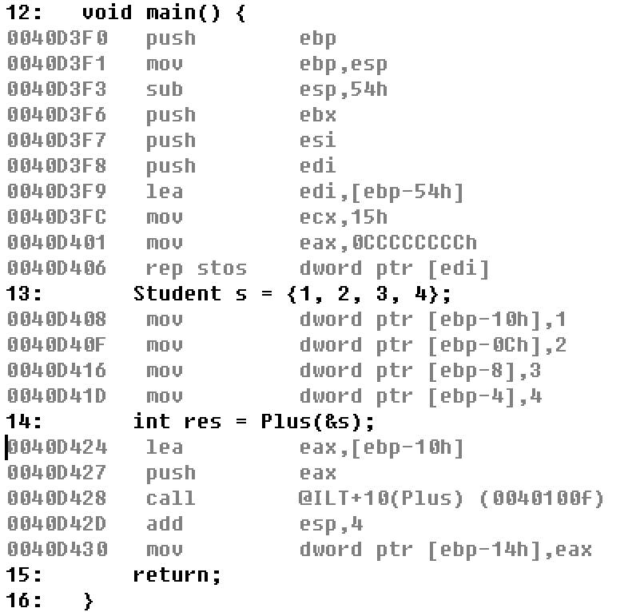
这样我们就可以使用指针的方式来避免内存的重复使用，效率更高。
可能很多人看到这就很疑惑了，那这跟C++有什么关系呢？我们之前说过C++和C的本质区别，就是编译器替代我们做了很多事情；别着急，慢慢来看。
我们使用指针优化过的代码，实际上还是存在小缺陷的，当结构体成员很多的时候，我们在Plus函数体内就要用指针的调用方式，一堆成员相加...
那么是否可以让我们调用更加简单，更加方便呢？如下代码就可以：
struct Student { int a; int b; int c; int d; int Plus() { return a + b + c + d; }};void main() { Student s = {1, 2, 3, 4}; int res = s.Plus(); return;}将函数放在结构体内，就不需要我们再去写传参、再去使用指针的调用方式了，因为这些工作编译器帮我们完成了，而本质上这与指针调用没有区别：
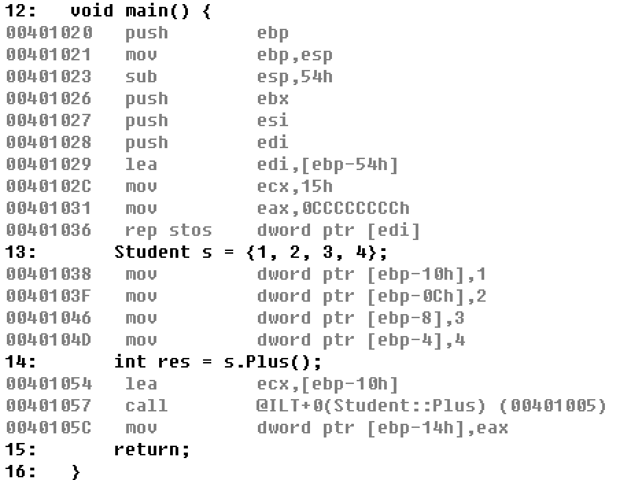
而这种写法就是C++的概念：封装；也就是说将函数写在结构体内的形式就称之为封装，其带来的好处就是我们可以更加方便的使用结构体的成员。
讲到了封装，我们就要知道另外两个概念：
类：带有函数的结构体，称为类；
成员函数：结构体里的函数，称为成员函数
函数本身不占用结构体的空间（函数不属于结构体）
调用成员函数的方法与调用结构体成员的语法是一样的 → 结构体名称.函数名()
this指针
之前我们学过了封装，如下代码：
struct Student { int a; int b; int c; int d; int Plus() { return a + b + c + d; }};void main() { Student s = {1, 2, 3, 4}; int res = s.Plus(); return;}其对应的反汇编代码如下：
可以看见我们使用s.Plus()的时候，传递的参数是一个指针，这个指针就是当前结构体的地址，这个指针就是this指针。（通常情况下编译器会使用ecx来传递当前结构体的指针）
那么当我们将Plus函数修改成无返回值，不调用结构体成员后，这个指针还会传递过来么？
struct Student { int a; int b; int c; int d; void Plus() { }};void main() { Student s = {1, 2, 3, 4}; s.Plus(); return;}我们看下反汇编代码，发现指针依然会传递过来：

那也就是说this指针是编译器默认传入的，通常会通过ecx进行参数的传递，不管你用还是不用，它都存在着。
既然this指针会作为参数传递，我们是否也可以直接使用这个指针呢？答案是可以的：
struct Student { int a; int b; void Init(int a, int b) { this->a = a; this->b = b; }};我们在结构体的成员函数内使用this这个关键词就可以调用了，如上代码所示。
那么this指针有什么作用呢？我们可以看下如下代码：
struct Student { int a; int b; void Init(int a, int b) { a = a; b = b; }};void main() { Student s; s.Init(1,2); return;}这段代码我们要实现的就是，使用成员函数初始化成员的值，但是实际运行却不符合我们的预期：
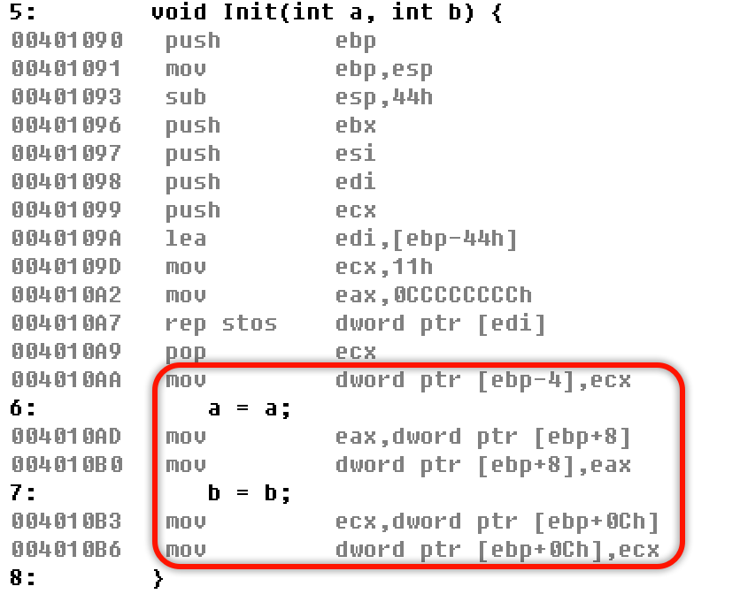
跟进反汇编代码发现，这里就是将传入的参数赋值给了参数本身，并没有改变成员的值，这是因为编译器根本不知道你这里的a到底是谁，所以我们就需要借助this指针来实现：
#include <stdio.h>struct Student { int a; int b; void Init(int a, int b) { this->a = a; this->b = b; } void Print() { printf("%d %d", this->a, this->b); }};void main() { Student s; s.Init(1,2); s.Print(); return;}为了方便，添加一个成员函数，用于打印输出成员的值：

可以看见，这里成功进行初始化了。
总结：
this指针是编译器默认传入的，通常会使用ecx进行参数的传递
成员函数都有this指针，无论是否使用
this指针不能做++ --等运算，也不可以被重新赋值
this指针不占用结构体的宽度
构造函数与析构函数
构造函数
struct Student { int a; int b; Student() { printf("Look."); } void Init(int a, int b) { this->a = a; this->b = b; } };如上代码中，我们发现了存在一个函数，这个函数没有返回类型并且与结构体名称一样，那这段函数在什么时候执行呢？
我们先不使用之前学习的方法去调用，直接创建一个对象，这时候会发现该函数就直接执行了：
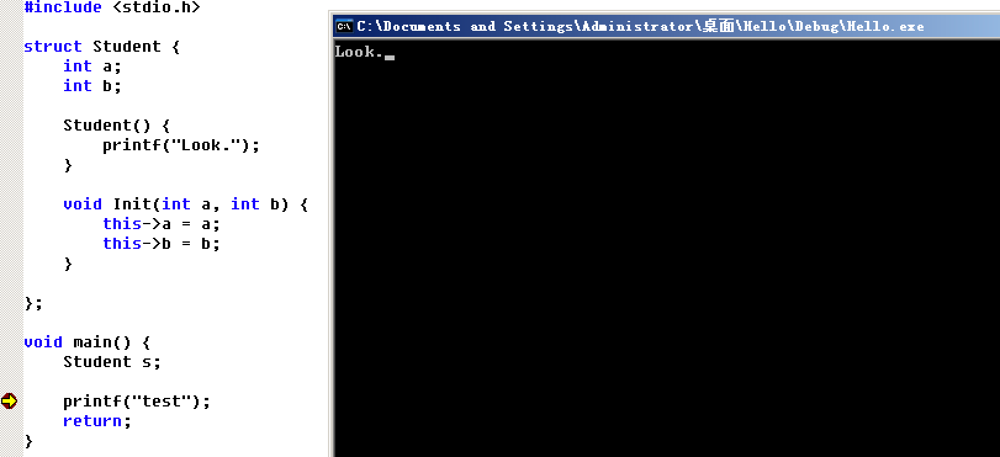
这个函数，我们就称之为构造函数。
它的汇编代码如下：
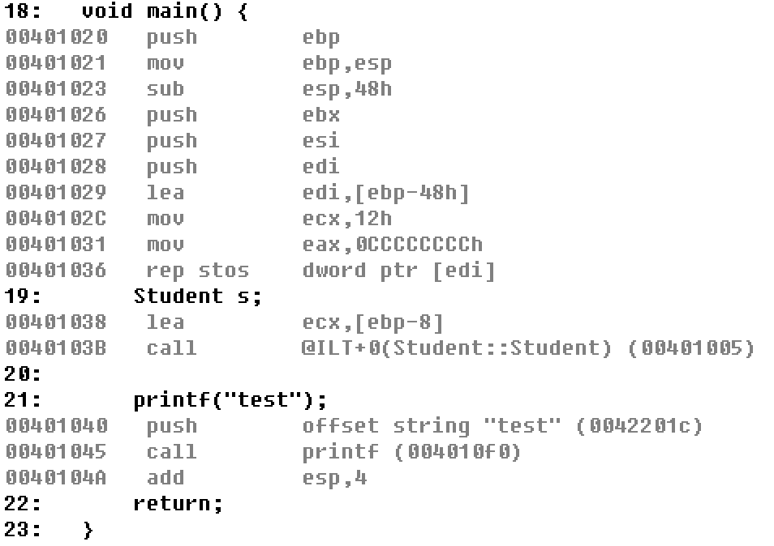
如果我们想要在创建对象的时候，自定义初始化成员的值，就可以在析构函数上加上参数：
struct Student { int a; int b; Student(int a, int b) { this->a = a; this->b = b; } void Init(int a, int b) { this->a = a; this->b = b; } };void main() { Student s(1, 2); return;}创建对象的时候，在对象名后面加上括号传入即可；但是这样就会存在一个问题，我们不想初始化值的时候就没有办法创建这个类：
struct Student { int a; int b; Student(int a, int b) { this->a = a; this->b = b; } void Init(int a, int b) { this->a = a; this->b = b; } };void main() { Student s; return;}编译直接出错：

这是因为编译器发现你没有传入参数，就会去寻找没有参数的构造函数，但是在这段代码中没有声明，所以需要声明一下：
#include <stdio.h>struct Student { int a; int b; Student() { printf("Look."); } Student(int a, int b) { this->a = a; this->b = b; } void Init(int a, int b) { this->a = a; this->b = b; } };void main() { Student s; return;}这样就没有任何问题了，你想传参就传，不想就不传。
我们总结一下其（构造函数）特点：
构造函数名称与类名一样
不能写返回类型（无返回值）
创建对象时，则会自动调用执行，一般用于初始化
可以有多个构造函数（建议只有一个无参的），这种声明方式我们称之为重载（其他函数也可以）
编译器不要求必须提供构造函数
析构函数
析构函数函数的语法跟构造函数很像，其区别就是：析构函数需要在函数名前面加一个波浪号、析构函数只能有一个、析构函数函数不可以写参数、构造函数是创建对象的时候执行，但是析构函数函数是在对象销毁前执行：
#include <stdio.h>struct Student { int a; int b; Student() { printf("Look."); } Student(int a, int b) { this->a = a; this->b = b; } ~Student() { printf("Look A."); } void Init(int a, int b) { this->a = a; this->b = b; } };void main() { Student s; return;}析构函数函数是在对象销毁前执行，那么对象会在什么时候销毁呢？可以看下反汇编代码：
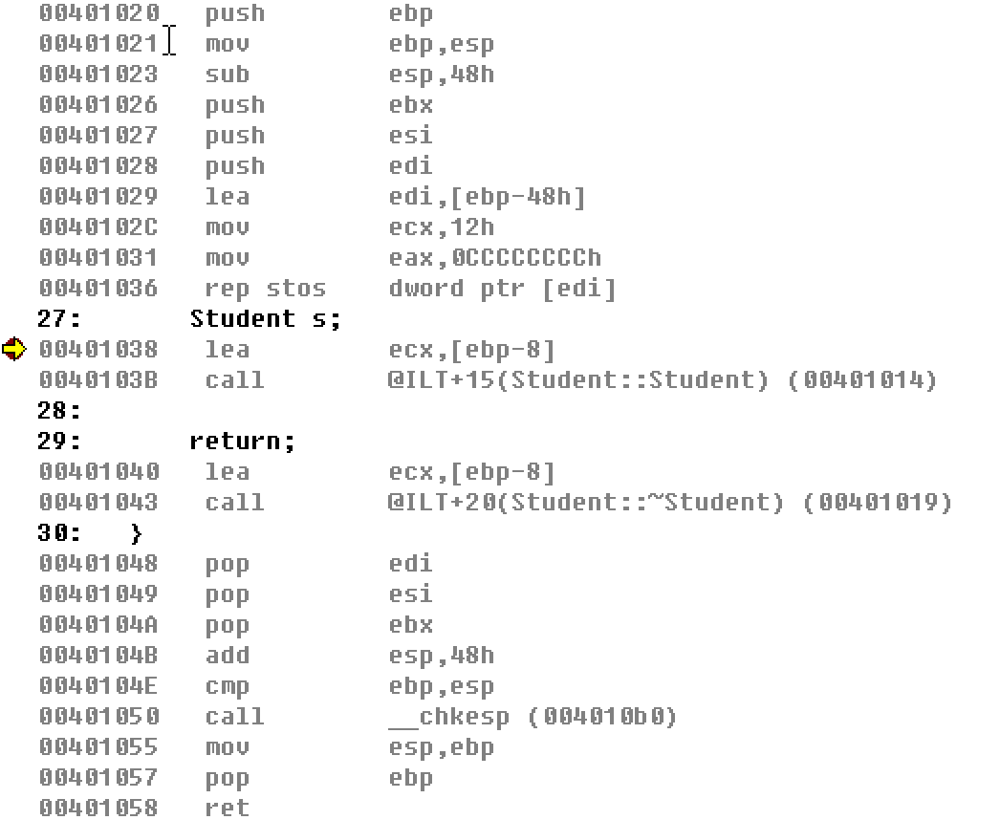
会发现在程序执行结束，也就是main函数的return之后会执行析构函数函数，但这句话实际上是不严谨的，因为我们的main函数是没有返回值的，也就是return不会有对应的汇编代码，当我们设置返回值再来看下反汇编代码：
#include <stdio.h>struct Student { int a; int b; Student() { printf("Look."); } Student(int a, int b) { this->a = a; this->b = b; } ~Student() { printf("Look A."); } void Init(int a, int b) { this->a = a; this->b = b; } };int main() { Student s; return 0;}
可以很清晰的看见，析构函数是在return返回之前执行的。
我们总结（析构函数）一下：
只能有一个，不支持重载
无返回值
无任何参数
主要用于清理工作
编译器不要求必须提供
当对象在main函数（堆栈）中创建，在return之前调用执行；当对象在全局变量区，则会在应用程序退出之前调用
继承
struct Person { int age; int sex;};struct Teacher { int age; int sex; int level; int classId;};如上代码中可以看见，Teacher类与Person类都存在着相同的2个成员age和sex，那么这就相当于重复编写了，我们可以通过继承的方式避免这样重复的编写（当前类名称:要继承的类名称）：
struct Teacher:Person { int level; int classId;};创建对象的对应反汇编代码如下，可以清晰的看见与我们正常的内存布局是一样的：

那么继承是什么？这就很好理解了，继承的本质就是数据复制，子类（派生类）继承（复制）父类（基类）的数据，在这里Person父类（基类），Teacher为子类（派生类）；继承可以减少重复代码的编写。
假设，子类中存在一个与父类中相同的成员会如何？
struct Person { int age; int sex;};struct Teacher:Person { // Inherit int age; int classId;};我们可以创建一个对象来看一下对应的宽度和反汇编代码：
void main() { Teacher t; t.age = 30; t.sex = 1; t.classId = 20; printf("%d", sizeof(t)); printf("%d", sizeof(t)); return;}首先看下数据宽度，我们会发现是16，那也就是说这里不管如何你只要继承了，在编译器中两个成员还是会直接添加过来，Teacher的成员依然是4个「4成员*4数据宽度（int类型） = 16」

再来看下反汇编代码：

之前我们已经看过了正常的内存布局了，在这里，很明显，少了一个0x10位置的成员，那么按照内存布局应该是这样的：
0x10 → Person.age
0x0C → Person.sex
0x08 → Teacher.age
0x04 → Teacher.classId
而在这里创建对象编译器使用的age成员默认就是当前类Teacher的成员；想要使用父类中的成员可以使用这种方式（对象名.父类名称::成员名称）：
void main() { Teacher t; t.Person::age = 30; // Father t.age = 30; t.sex = 1; t.classId = 20; return;}子类与父类成员重名的问题我们可以通过这种方式解决，但是在实际应用中还是尽量避免这种问题比较好。
我们可以多次继承么，或者说继承仅仅局限于子、父关系么？如下代码，B继承了A，C继承了B，C是否只继承了B的v和n？
struct A { int x; int y;};struct B:A { int v; int n;};struct C:B { int p; int o;};我们可以来打印一下C的数据宽度：
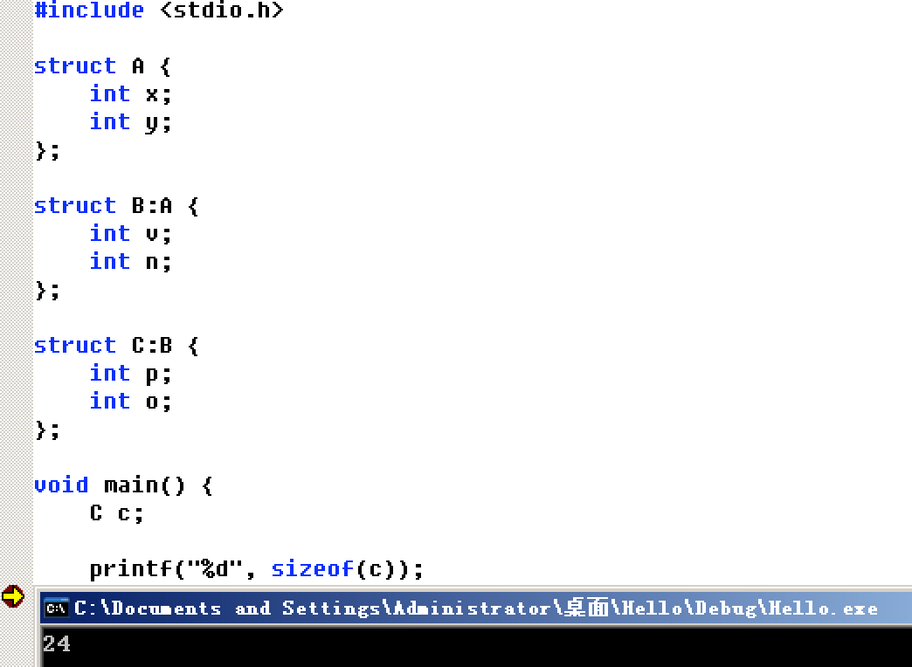
结果是24，那么就说明C不仅仅继承了B，还继承了A；再换个说法就是，继承的本质是数据的复制，那也就是说当复制完（继承）后才是其本身，B的本身就是4个成员x、y、v、n。
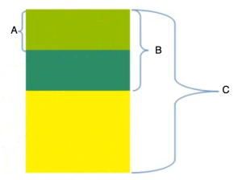
除了这种方式以外，我们想实现同样的效果可以使用多重继承（当前类:继承的类A, 继承的类B）：
struct A { int x; int y;};struct B { int v; int n;};struct C:A,B { // Multiple int p; int o;};但这种方式在很多面向对象语言中是不允许时间的，在C++中是可以使用的，其内存分布也与第一种方式不一样：
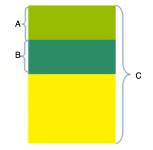
最后：继承的类A和继承的类B的顺序，谁在前，谁就在内存分布中的前面；不推荐使用多重继承，这会增加程序的复杂度。
类成员的访问控制
课外 → 好的编程习惯：定义与实现分开写，提升代码可读性。
如下代码，Student这个类的所有成员我们都可以调用，但是我们不想让被人调用Print1这个方法该怎么？
struct Student { int age; int sex; void Print1() { printf("Func Print1"); } void Print() { printf("Func Print"); }};这里我们可以使用关键词：private、public来控制我们想被人访问的和不想被人访问的成员：
struct Student {private: void Print1() { printf("Func Print1"); }public: int age; int sex; void Print() { printf("Func Print"); }};当我们调用Print1的时候就会发现无法编译：

private（私有）、public（公有）的使用总结：
对外提供的函数或者变量，定义成public，不能随意改动
可能会改动的函数或者变量，定义成private，使用时编译器会检测
只有当前结构体内部函数才可以访问private的成员
private、public可以修饰函数或者变量
那么问题来了，private修饰的函数或者变量真的不能访问吗？并不是，只是我们没有办法通过正常的方式去使用，但是我们可以使用指针的方式去调用：
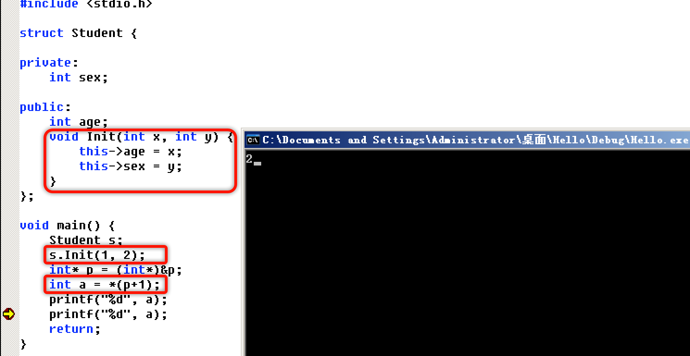
那就说明private修饰的成员与普通成员没有区别，只有编译器会检测。
从这节课开始我们不再使用struct作为类的创建，而是直接使用class关键词，其使用没有什么区别，唯一的区别在于成员默认访问属性不一样，在struct中所有成员默认的属性是public，而在class中则相反：

除此之外还有一个就是在继承时的区别，我们可以将一个正常的struct继承修改成class：
class A {public: int x; int y;};class B:A {public: int v; int n;};当我们创建对象调用的时候却无法编译：
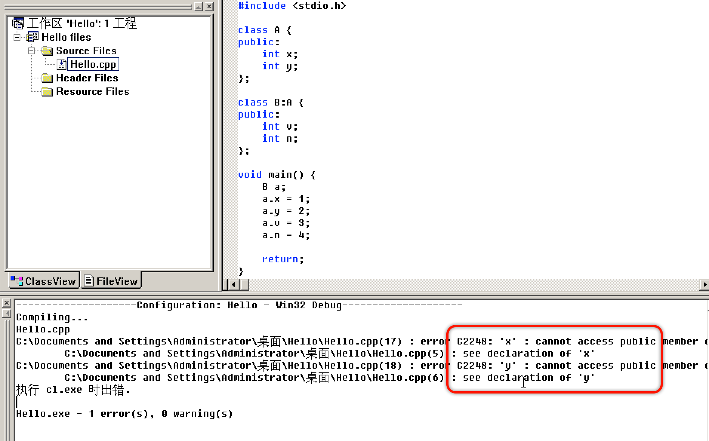
这是因为在继承的时候默认将继承过来的A的所有成员设置为private，也就是如下代码：
class A {public: int x; int y;};class B:private A {public: int v; int n;};而我们想要外部可以调用可以将private修改成public。
最后一个问题：私有成员是否会被继承？
class A {private: int x;public: int y;};class B:public A {public: int v; int n;};以上代码B继承了A，这里A前面的public代表着，按照A的成员定义的属性继承过来，公有就是公有，私有就是私有。
而在这里我们想要确认B有没有继承A的私有成员，有2个方法：
1.查看数据宽度，显示为16
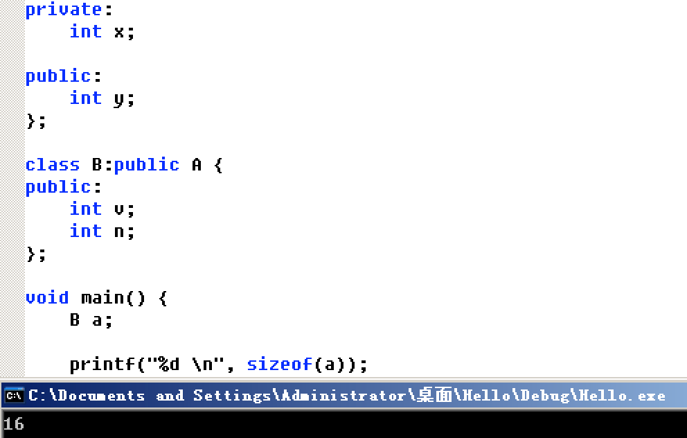
2.指针方式调用，可以成功调用获取到值
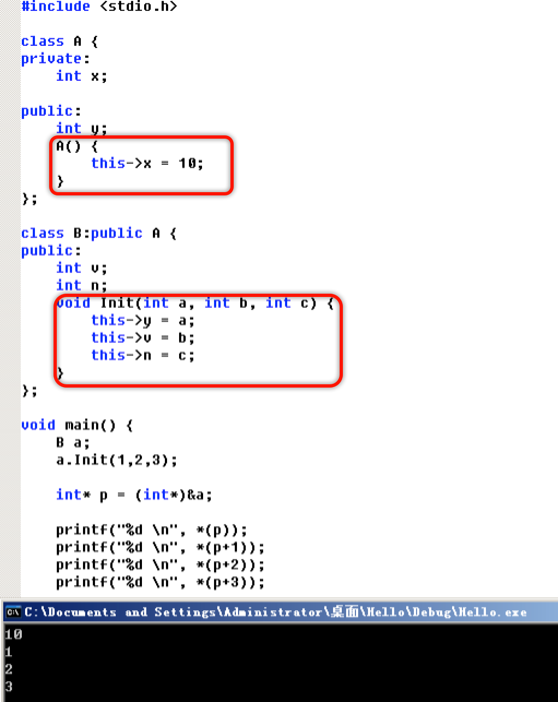
所以我们得出最终结论：父类的私有成员是可以被继承的，但是也不能直接访问。
在堆中创建对象
我们可以在什么地方创建对象？
全局变量区，在函数外面
在栈中创建对象，也就是函数内
在堆中创建对象
注意：之前一直提到的堆栈实际上是两个概念->堆、栈，我们之前所讲的就是栈，从本章开始要严格区分。
在C语言中，我们可以通过一个函数去申请一块内存，就是malloc(N)；申请的这一块内存就是在堆中的。
在堆中创建对象我们可以使用new、delete这两个关键词来创建和释放：
Person* p = new Person();delete p;我们可以来实际的看一下new、delete这两个关键词主要做了什么。
首先我们使用new关键词的时候会发现，其除了在堆中创建了对象还会调用构造函数：

再跟进看看使用delete，它会释放空间并调用析构函数：

我们想要了解其本质，还是要去跟一下汇编代码，这里跟一下new关键词的执行流程看看其分别调用的函数（跟进call operator new (004012e0)）：
而后调用了构造函数：call @ILT+0(Person::Person) (00401005)
我们再来跟下malloc函数的调用步骤：
call malloc (00401a20) → _nh_malloc_dbg → _heap_alloc_dbg → _heap_alloc_base → HeapAlloc
那么这时候一下就清楚了new的本质，实际上就是malloc+构造函数，同样的方法可以跟下delete看下它跟free函数。
跟进delete关键词，会发现其会先调用析构函数函数然后再去调用operator delete然后就是_free_dbg：

所以delete的本质就是析构函数+free。
如果我们想要在堆中申请数组，需要使用new[]、delete[]这两个关键词来创建和释放。
// C、C++的方式在堆中申请、释放int数组int* p = (int*)malloc(sizeof(int)*10); free(p);int* p = new int[10]; delete[] p;// C、C++的方式在堆中申请、释放Class类型数组Person* p = (Person*)malloc(sizeof(Person)*10); free(p);Person* p = new Person[10]; delete[] p;malloc和new[]的区别：
malloc不会调用构造函数
new[]会调用构造函数，创建一次则调用一次，例如new Person[10]则调用10次
同理也可以知道free和delete[]的区别。
delete和delete[]是有区别的，如果使用new[]在堆中创建对象，使用delete去释放则只会释放第一个对象，其他的不会释放。
引用类型
引用类型就是变量的别名，其在初始化时必须要赋值。
// 基本类型int x = 1;int& ref = x;ref = 2;printf("%d \n",ref);// 类Person p;Person& ref = p;ref.x = 10;printf("%d \n",p.x);// 指针类型int****** x = (int******)1;int******& ref = x;ref = (int******)2;printf("%d \n",x);// 数组类型int arr[] = {1,2,3};int (&p)[3] = arr;p[0] = 4;printf("%d \n",arr[0]);如上是引用类型作用在各个类型下的例子，那么引用类型是如何实现的呢？其本质是什么？我们可以看下反汇编代码：

会发现这段反汇编和指针的反汇编一模一样的：

这时候我们暂时的出结论：引用类型就是指针。
但如果引用类型就是指针，为什么C++需要新创建一个引用类型的概念呢？它们之间必然存在着一些区别，我们可以从初始化、运算、赋值来看反汇编代码的区别：
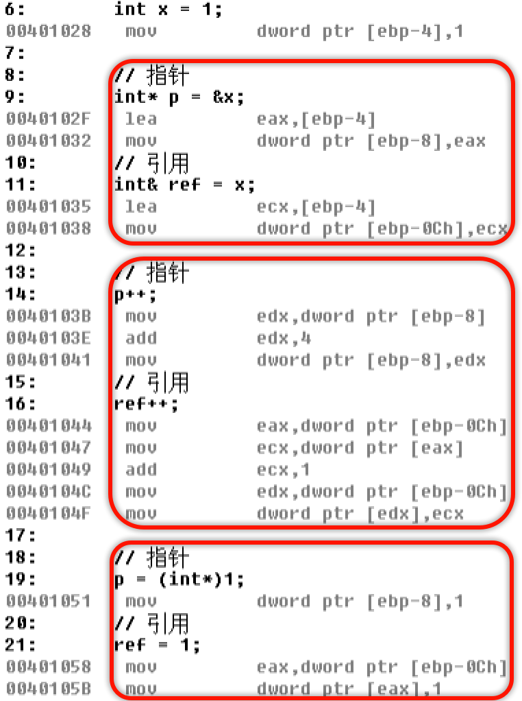
我们可以很清晰的看见区别从运算到赋值都不一样，指针运算到赋值改变的是指针本身，而不是指针指向的那个地址，而引用则不一样其从运算到赋值改变的是所引用的变量，我们得出这几个结论：
引用必须赋初始值，且只能指向一个变量，从一而终（专一）；
对引用赋值，是对其指向的变量赋值，而不是修改引用本身的值；
对引用做运算，就是对其指向的变量做运算，而不是对引用本身做运算；
引用类型就是一个弱化了的指针；个人理解：引用类型就是一个*p。
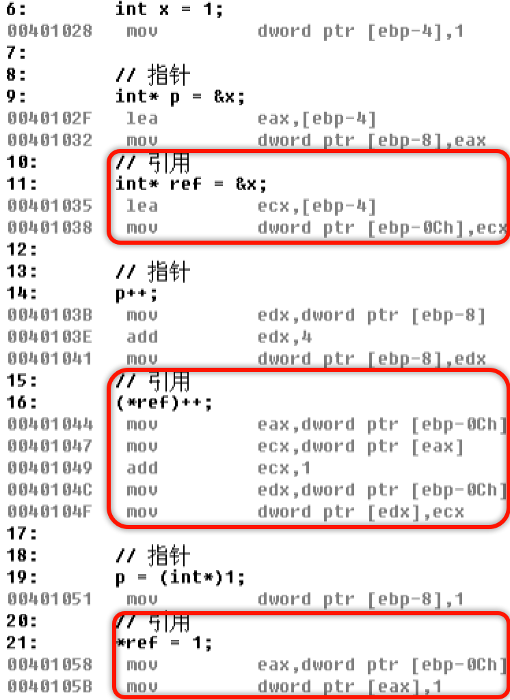
C++设计引用类型是因为指针类型很难驾驭，一旦用不好就回出问题，所以取长补短设计了引用类型。
那么引用类型在实际开发中的作用是什么呢？我们可以用在函数参数传递中：
#include <stdio.h>void Plus(int& i) { i++; return;}void main() { int i = 10; Plus(i); printf("%d \n", i); return;}如上代码中Plus函数的参数是一个引用类型，当我们把变量i传递进去，i就会自增1，而实际上也就修改变量i本身的值；换一种说法就是，我们之前函数参数传递的是值，而这里传递的是变量的地址。

那么在构造类型中又是怎么样的呢？
#include <stdio.h>class Base {public: int x; int y; Base(int a, int b) { this->x = a; this->y = b; }};void PrintByRef(Base& refb, Base* pb) { printf("%d %d \n", pb->x, pb->y); printf("%d %d \n", refb.x, refb.y);}void main() { Base b(1, 2); PrintByRef(b, &b); return;}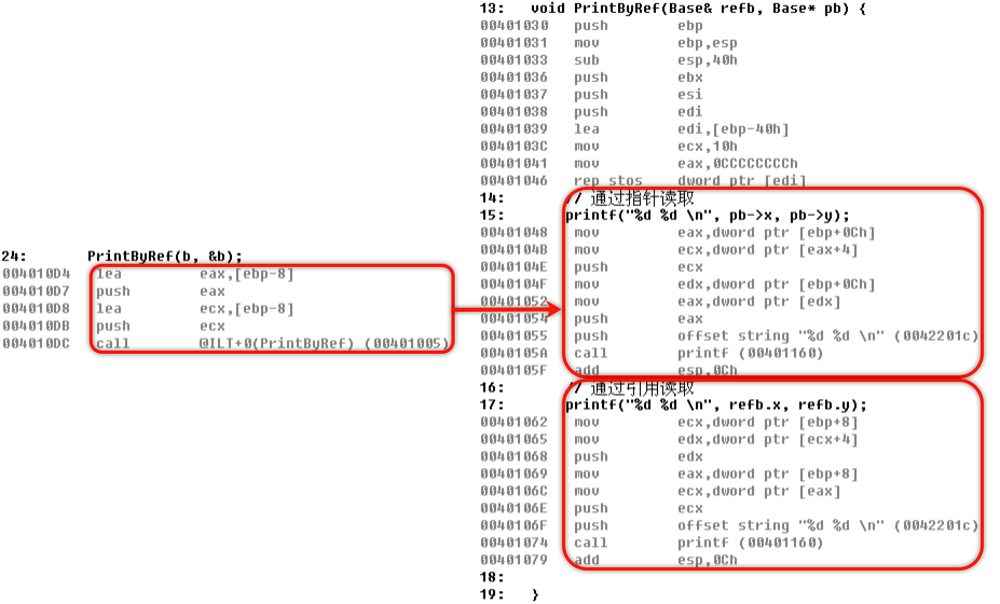
我们可以看见除了读取的表现形式不一样，实际上汇编代码是一模一样的；但是指针类型是可以重新赋值并运算的，而引用类型不可以。
当一个变量是int类型的，而我们引用类型却是一个其他类型的，会怎么样呢？
int x = 10;Person& ref = (Person&)x;这是可以编译的，但是没有实际意义，所以在使用引用的时候原来是什么类型就应该使用什么类型。
大家都知道，我们使用指针的时候是可以修改指针本身的，这会存在一定的风险，而C++中提供了引用类型，不可以修改引用本身，我们可以修改被引用的值，当我们不想其他人修改引用类型对应引用的值，可以使用const这个关键词，这种方式我们称之为常引用：
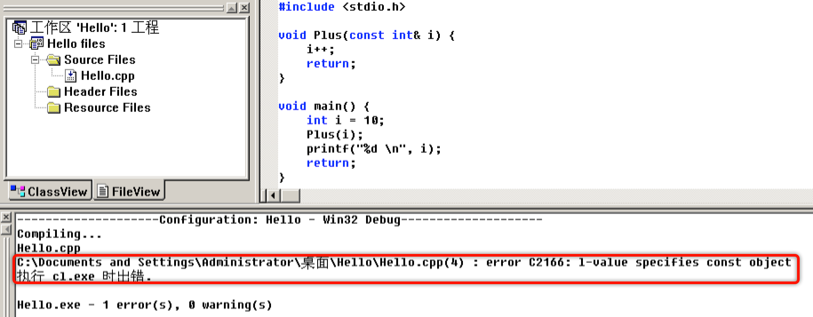
面向对象程序设计之继承与封装
之前已经学习过继承和封装了，但是要在实际开发中使用，光学语法和原理是不够的，在设计层面我们需要做一些优化。
如下代码是继承的例子：
#include <stdio.h>class Person {public: int Age; int Sex; void Work() { printf("Person:Work()"); }};class Teacher:public Person {public: int Level;};void main() { Teacher t; t.Age = 10; t.Sex = 1; t.Level = 2; t.Work(); return;}当t.Age=-1，这在代码层面（语法）是合法的，但是不合理，因为人的年龄不可能是负数；所以从设计层面以上代码就不正确、不合理。
所以，我们可以将不想被外界访问的成员隐藏起来，也就是使用private关键词：
#include <stdio.h>class Person {private: int Age; int Sex;public: void Work() { printf("Person:Work()"); }};class Teacher:public Person {private: int Level;};但是这样，如上代码就会出现问题，因为我们没法直接访问到成员，因此从设计层面出发设计这个，我们可以提供按钮或者说一个函数用来控制这些值：
#include <stdio.h>class Person {private: int Age; int Sex;public: void Work() { printf("Person:Work()"); } void SetAge(int Age) { this->Age = Age; } void SetSex(int Sex) { this->Sex = Sex; }};class Teacher:public Person {private: int Level;public: void SetLevel(int Level) { this->Level = Level; }};而后我们可以通过函数去设置这些值，那有人就会问了，你这样不还是可以输入-1吗？是的，是可以输入，单同样，我们可以在成员函数内做条件判断来控制输入的内容：
void SetAge(int Age) { if (Age > 0) { this->Age = Age; } else { this->Age = 0; }}用成员函数控制就不会存在别人想要调用这个类的时候存在合法不合理的情况了，其根本的目的就是可控。（数据隐藏）
除了成员数据（变量）以外，还有一些提供给自己用的成员函数也要隐藏。
但这样随之而来的问题也就产生了，一般情况下，我们是想要在创建对象的时候就赋值了，也就是说我们使用构造函数去赋值，那这时候如果父类存在构造函数，使用子类创建对象的时候，子类默认会调用父类无参的构造函数，也就是说父类如果存在有参的构造函数被继承，就必须要有无参的构造函数。
所以一个好的习惯：当你写一个类的时候，就应该写一个无参的构造函数。
class Person {private: int Age; int Sex;public: Person() { } Person(int Age, int Sex) { this->Age = Age; this->Sex = Sex; } void Work() { printf("Person:Work()"); }};class Teacher:public Person {private: int Level;public: Teacher() { } Teacher(int Level) { this->Level = Level; }};如上代码，调用Teacher创建对象，我们想通过构造函数赋值Age和Sex该怎么办？第一时间想到的时候使用this调用，但是这里是继承父类的，肯定不行。
C++也提供了这种情况下的语法：
Teacher(int Age, int Sex, int Level):Person(Age, Sex) { this->Level = Level;}在子类有参构造函数中加入参数列表，而后在括号后门加上冒号跟上父类有参构造函数，传入变量即可。
有些人就疑问了，为什么这种写法不可以呢？
Teacher(int Age, int Sex, int Level) { Person(Age, Sex); this->Level = Level;}这只有利用反汇编代码来解释了：
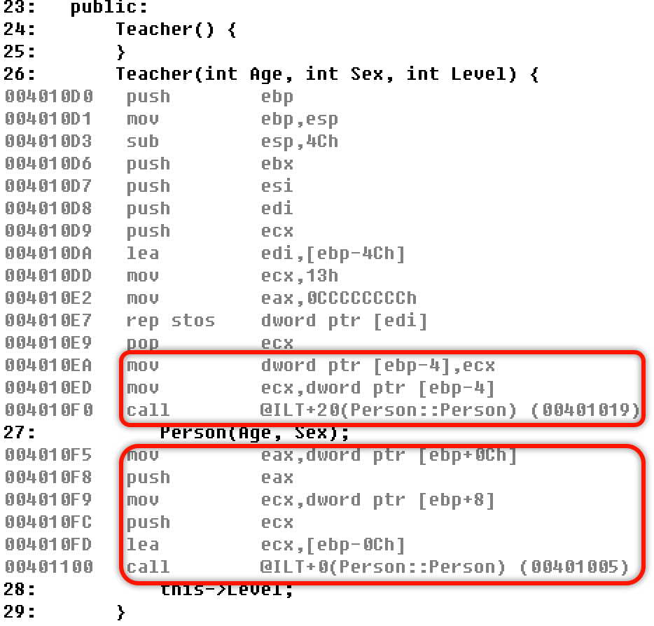
如上反汇编代码，可以很清楚的看见当我们不使用那种方法还是会调用一遍父类无参的构造函数，接着手动添加的构造函数，编译器会把堆栈中临时分的对象赋值，但是当我们这段构造函数执行完成之后就没了，所以没有任何意义。
面向对象程序设计之多态
C++是一门面向对象的编程语言，所有的面向对象语言都有一个特征：封装、继承、多态；之前已经了解过封装、继承了，这里来了解一下多态。
所有的面向对象的编程语言在设计的时候都是为了解决一个问题，那就是避免重复造轮子，也就是避免写2遍重复的代码，我们也可以称之为代码复用，其体现方式有2种：1.继承；2.共用相同的函数。
现在我们有一个需求，需要打印对象的成员变量，如下代码：
#include <stdio.h>class Person {private: int Age; int Sex;public: Person() { } Person(int Age, int Sex) { this->Age = Age; this->Sex = Sex; } void Print() { printf("%d \n", this->Sex); }};class Teacher:public Person {private: int Level;public: Teacher() { } Teacher(int Age, int Sex, int Level):Person(Age, Sex) { this->Level = Level; }};void PrintPerson(Person& p) { p.Print();}我们创建了一个PrintPerson函数来调用Person的Print函数，但是在这里如果我们想要打印Teacher的成员呢？那就需要创建2个打印函数了，也就是违背了面向对象的初衷，重复造轮子了。
在C++中我们可以使用父类的指针来指向子类的对象：
void main() { Person p(1,3); Teacher t(1,2,3); Person* px = &t; return;}如下图我们可以很清晰的看见内存的结构，当我们形容子类B内存结构的时候，一定是有三个成员的，而不是一个成员z，当我们创建A*指针的时候指向的是子类对象的首地址，通过这个指针可以访问x、y，刚好子类对象B的开始位置是父类类型对象的第一个成员，所以我们可以使用父类类型的指针指向子类类型对象；但是反之（子类类型的指针指向父类类型的对象）我们却不可以，这是因为使用父类类型的指针指向子类类型对象有一个弊端，那就是没法访问子类类型的z，反过来的话，父类类型对象的成员只有x、y没有z，所以我们通过子类类型指针访问的时候是可以访问到三个成员的：x、y、z，但实际上父类对象是没有z的，那么在访问的过程中就会存在问题。

所以我们可以只保留PrintPerson函数，而不再去重复造轮子：
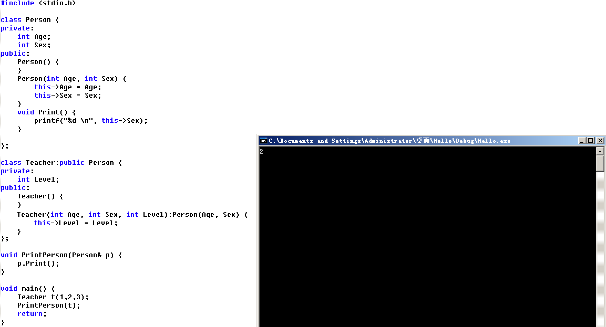
如上代码仅仅是为了解决这种问题而举例的，所以代码严谨性可以忽略。
但是这样的弊端，就很清楚了，就是我们通过父类类型的指针指向子类类型的对象，是无法访问到子类类型自己本身的成员，只能访问到继承父类类型的成员。
所以这个还是无法满足我们的实际需求，那我们想不改变原有PrintPerson函数的情况下，只有在子类中重写Print函数才能到达需求（函数重写）：
class Teacher:public Person {private: int Level;public: Teacher() { } Teacher(int Age, int Sex, int Level):Person(Age, Sex) { this->Level = Level; } void Print() { Person::Print(); printf("%d \n", this->Level); }};Person::Print();是先调用父类的函数，但是在这里就可以打印了吗？实则不然：

我们可以看下反汇编代码，查看函数PrintPerson：
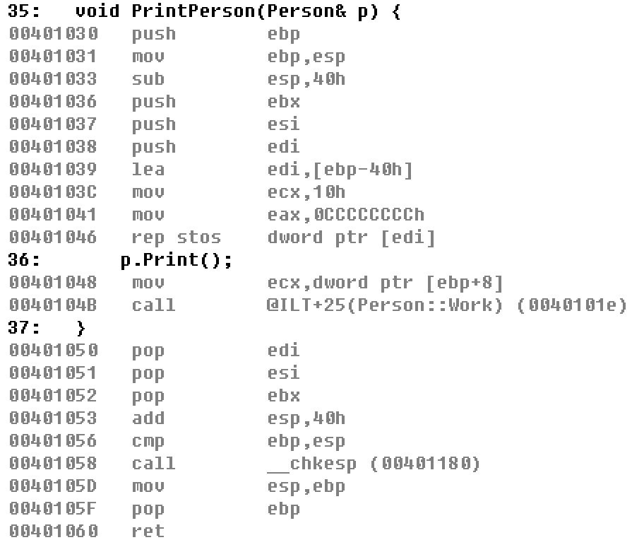
首先这里传递的是父类的引用类型，而后去调用的Print函数也是Person父类的，所以这样还是没法满足我们的需求。
我们可以使用一个关键词去解决这个问题，那就是在父类的Print函数类型前面加上virtual，则表示这是一个虚函数（其作用：当你PrintPerson函数传入的对象是子类就调用子类的，是父类就调用父类的）：

这时候我们就可以引出多态的概念：多态就是可以让父类的指针有多种形态，C++中是通过虚函数实现的多态性。
多种形态的表现，我们就已经在如上例子中说么了。
没有方法体的函数我们称之为纯虚函数，也就是说如下例子：
virtual int area() = 0;纯虚函数：
虚函数目的是提供一个统一的接口，被继承的子类重载，以多态的形式被调用；
如果父类中的虚函数可以任何意义，那么可以定义成纯虚函数；
含有纯虚函数的类被称之为抽象类，不能创建对象；
虚函数可以被直接调用，也可以被子类重写后以多态的形式调用，而纯虚函数必须在子类中实现该函数才可以使用。
虚表
上一章了解了多态，那么我们来了解一下多态在C++中是如何实现的。
了解本质，那就通过反汇编代码去看就行了，首先我们看下非多态的情况下的反汇编代码：

然后再来看下多态情况下的反汇编代码：
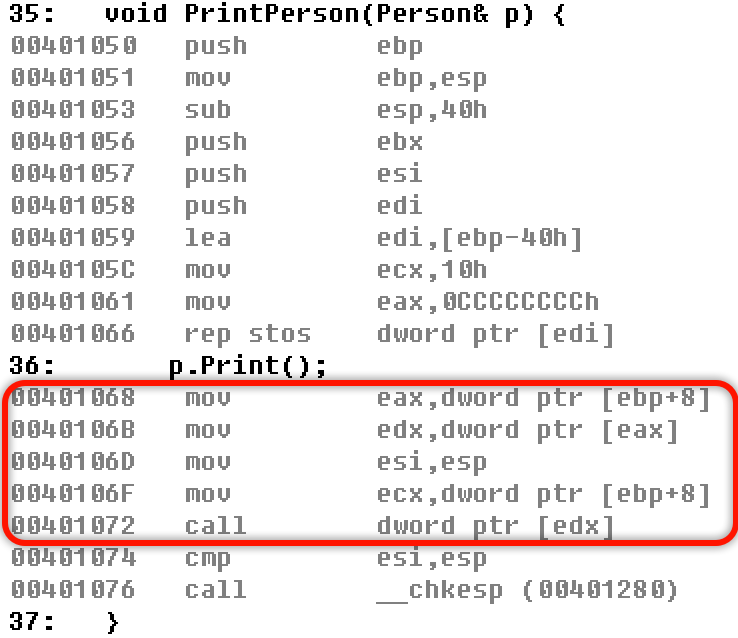
很明显这里多态的情况下会根据edx间接调用，而非多态则会直接调用。
那么我们来看下间接调用的流程是什么：
ebp+8地址对应的值给到eax（ebp+8 也就是函数的参数 → 当前参数指针【父类指针】）
eax地址对应的值给到edx（eax相当于当前对象的第一个成员）
调用edx地址对应的值，也就是子类对象的Print函数
但是这里很奇怪，第一个成员为什么就能是Print函数呢？跟我们之前理解的4个字节的参数完全不一样。
那么编译器到底是做了什么工作，才能根据我们传入的对象来进行间接调用的呢？这是因为虚表。
只要有虚函数，不论多少个，对象的数据宽度就会比其原来多出4个字节，这四个字节我们称之为虚表。
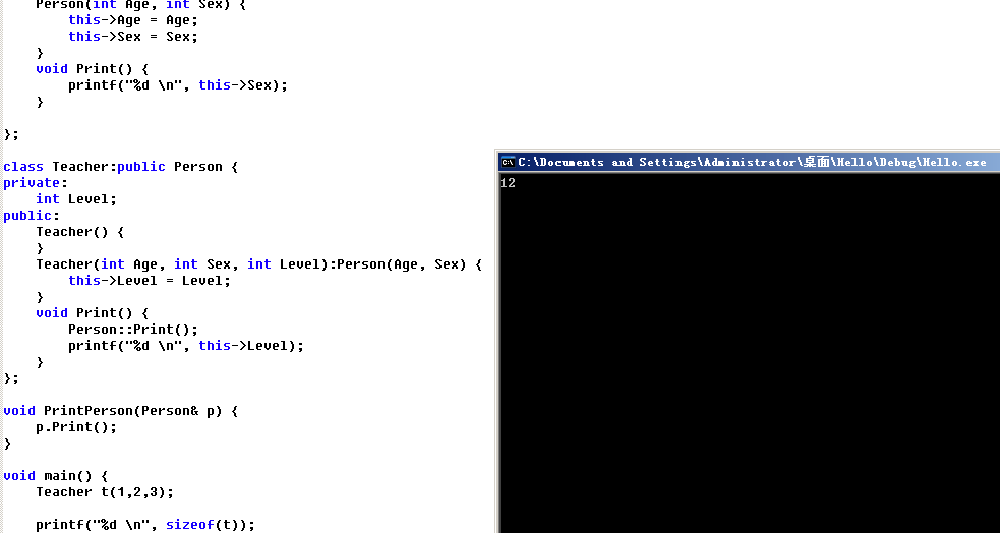

那么虚表在哪呢？可以通过VC6来寻找虚标，先创建对象然后下断点运行查看，如下图中，可以很清晰的看见对象t除了继承Person父类的Age、Sex以及本身的Level成员外，还有一个__vfptr，上面有一个地址就是0x00422024，那这个地址就是虚表，这个表里面存储的就是函数的地址：
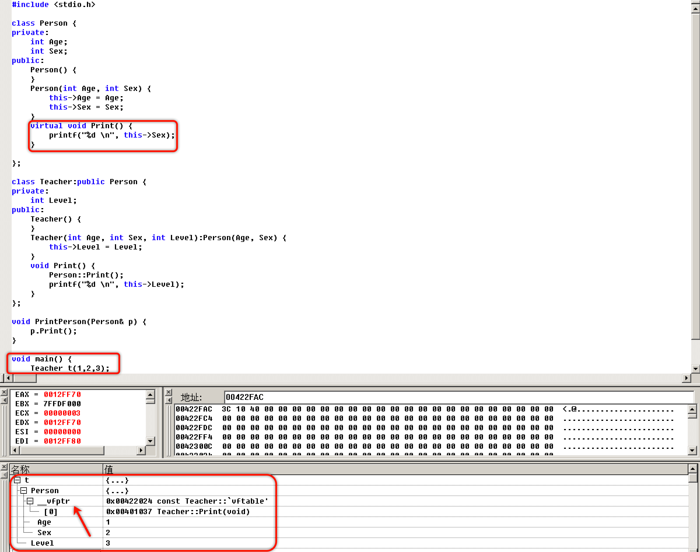
我们可以调出内存窗口查看一下：
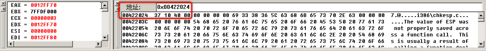
这个存储的地址就是0x00401037，这时候切到反汇编代码就然后Ctrl+G输入跟进这个地址：
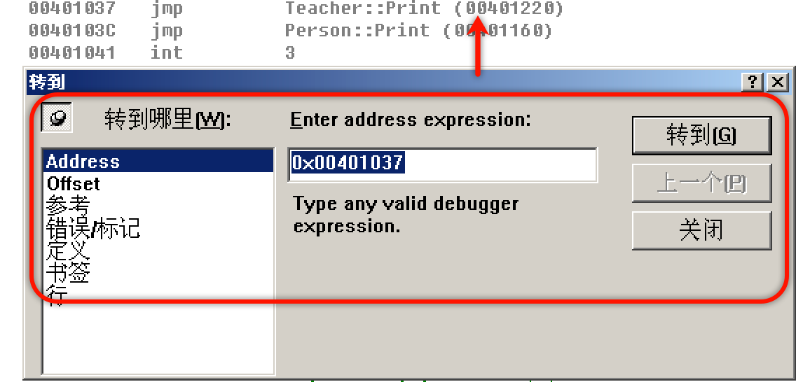
那这个地址就是Teacher的成员函数Print的地址。
虚表的结构：虚表中存储的都是函数地址，每个地址占用4个字节，有几个虚函数，则就有几个地址。
子类没有重写时，虚表中则只有父类自己的成员函数地址，反之，当子类重写虚函数时候，虚表中则存在父类自己的成员函数地址与子类重写的成员函数地址。
运算符重载
现在有一个类，其中有一个函数用于比较2个类的成员大小：
#include <stdio.h>class Number {private: int x; int y;public: Number(int x, int y) { this->x = x; this->y = y; } int Max(Number& n) { return this->x > n.x && this->y > n.y; }};void main() { Number a(3,4),b(1,2); int res = a.Max(b); printf("%d \n", res); return;}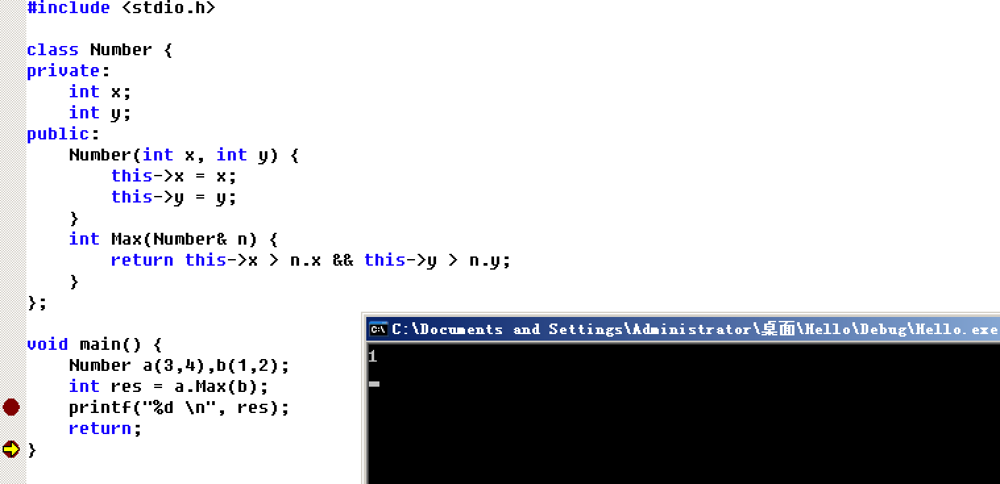
但是在这里，我们只是比较一下大小，确实用int类型，这有点浪费了，在C++中有一个类型叫bool类型，其返回就是真（1）、假（0），所以我们可以使用这个数据类型。
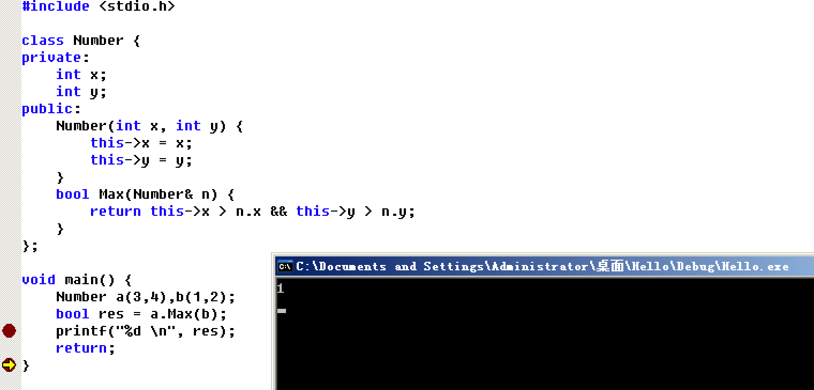
bool类型仅占用一个字节：
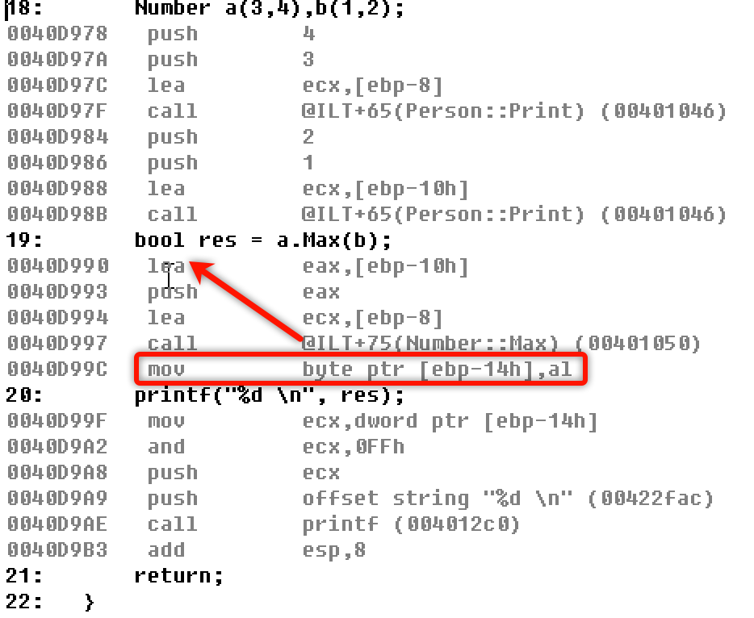
这样比较大小，多少还是有点麻烦，如果我们想实现跟其他的数一样直接比较大小该怎么办？直接使用a > b明显是不行的，因为编译器根本不知道你在比较什么。
这时候我们就需要使用运算符重栽，使用关键词：operator，例如我们想重载大于符号：
#include <stdio.h>class Number {private: int x; int y;public: Number(int x, int y) { this->x = x; this->y = y; } bool operator>(Number& n) { return this->x > n.x && this->y > n.y; }};void main() { Number a(3,4),b(1,2); int res = a > b; printf("%d \n", res); return;}只需要在自定义类里面按照格式重载运算符即可：

也就是说运算符重载，其本质意义就是给重新定义运算符，或者说取一个别名；其在底层上和我们之前的代码是没有任何区别的，其价值就是为了便于写代码。
重载其他的运算符：
Number operator++();Number operator--();Number operator+(Number& n);Number operator-(Number& n);Number operator*(Number& n);Number operator/(Number& n);bool operator<(Number& n);bool operator==(Number& n);bool operator>(Number& n) { return this->x > n.x && this->y > n.y;}模版
假设有一个冒泡排序的函数：
void Sort(int* arr, int nLength){ int i, k; for (i = 0; i < nLength; i++) { for (k = 0; k < nLength-1-i; k++) { if(arr[k] > arr[k+1]) { int temp = arr[k]; arr[k] = arr[k+1]; arr[k+1] = temp; } } }}但是这个冒泡排序的函数只能对int类型，如果我们想要使用char类型的时候就要重新写一个函数，这就违背了C++的初衷，重复造轮子了：

那么如何避免重复造轮子呢？C++中使用模板来解决这个问题。
函数模板的语法是这样的：
template<class 形参名, class 形参名, ...>返回类型 函数名(参数列表) { 函数体;}用模板的方式来修改一下这个冒泡排序函数：
template<class T>void Sort(T* arr, int nLength){ int i, k; for (i = 0; i < nLength; i++) { for (k = 0; k < nLength-1-i; k++) { if(arr[k] > arr[k+1]) { T temp = arr[k]; arr[k] = arr[k+1]; arr[k+1] = temp; } } }}在当前这个函数中我们只有一个地方需要替换修改，所以在写模板关键词时候尖括号内的class形参只有一个，而我们只需要将需要替换的地方改成形参的名字即可。
那么模版其原理是什么，编译器做了什么工作呢？我们可以看一下如下代码的反汇编代码：
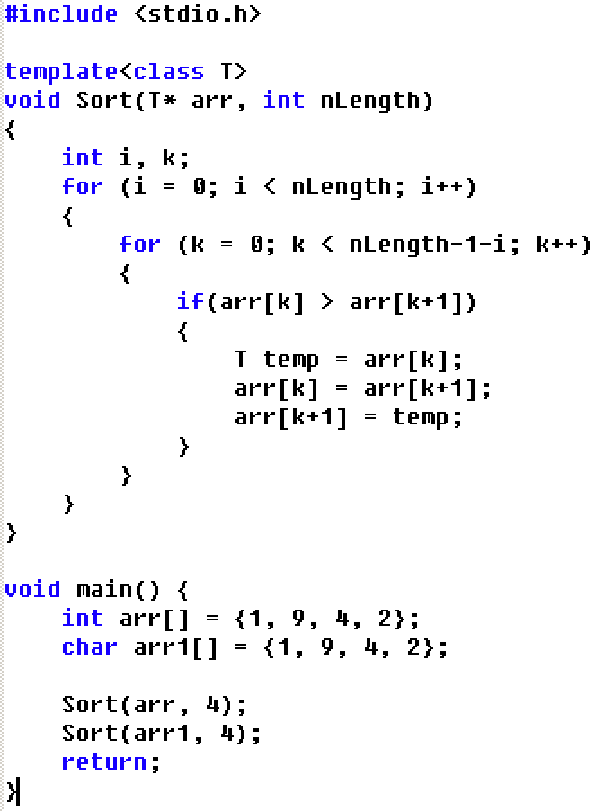
使用不同类型的数组传入冒泡排序函数，观察一下执行地址：
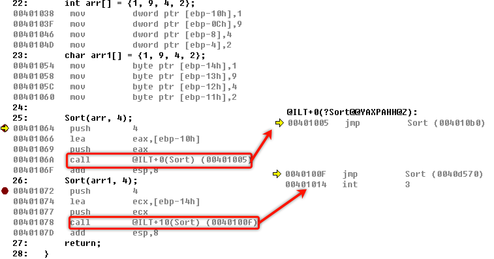
可以看见，两个函数的地址完全不一样，这就说明模板的本质就是编译器会在看见不同的传入类型时创建不同的函数。
模板除了可以在函数中使用也可以在结构体（类）中使用模板，其格式如下所示：
template<class 形参名, class 形参名, ...>class 类名 { ...;}如下代码，一个结构体，有两个成员函数，一个是比较返回最大的数，一个则是最小的数：
struct Base { int a; int b; char x; char y; int Max() { if (a>b) { return a; } else { return b; } } char Min() { if (x<y) { return x; } else { return y; } }};但这个结构体已经指定了成员变量的数据宽度int、char，而我们想要比较任意类型的话，可以使用模板改造下这段代码：
template<class T, class M>struct Base { T a; T b; M x; M y; T Max() { if (a>b) { return a; } else { return b; } } M Min() { if (x<y) { return x; } else { return y; } }};这个模板想使用的话，我们就需要告诉编译器模板中的T、M分别对应什么，所以如果直接使用Base b;则无法编译。
使用如下格式即可：
Base<int, char> b;
纯虚函数
之前学习过虚函数，也提到了纯虚函数，虽然纯虚函数语法很简单的，但是其比较难理解，所以在有一定的面向对象的基础时候再来学习会比较容易理解一些。
纯虚函数语法：
将成员函数声明为 virtual
该函数没有函数体，最后跟=0
class Base {public: virtual int Plus() = 0;}语法不过多的阐述，之前也有写过；接下来我们要了解一个新的概念：抽象类。
抽象类有这几种特征：
含有纯虚函数的类，称之为抽象类；
抽象类也可以包含普通的函数；
抽象类不能实例化（创建对象）。
那么问题来了，抽象类有什么意义呢？我们可以把抽象类看作是对子类的一种约束，或者认为其（抽象类）就是定义一种标准。
比如：淘宝，有很多店铺，虽然每个店铺卖的东西都不一样，但是他们同样都可以下单、评论、购物车，也就是说他们都遵守了这种标准规则；也就是说你可以把淘宝当作一个抽象类，其有很多成员：购物车、评论、商品展示区...但是他都没有定义，而是交给开淘宝店的人（子类）去根据标准规则定义。
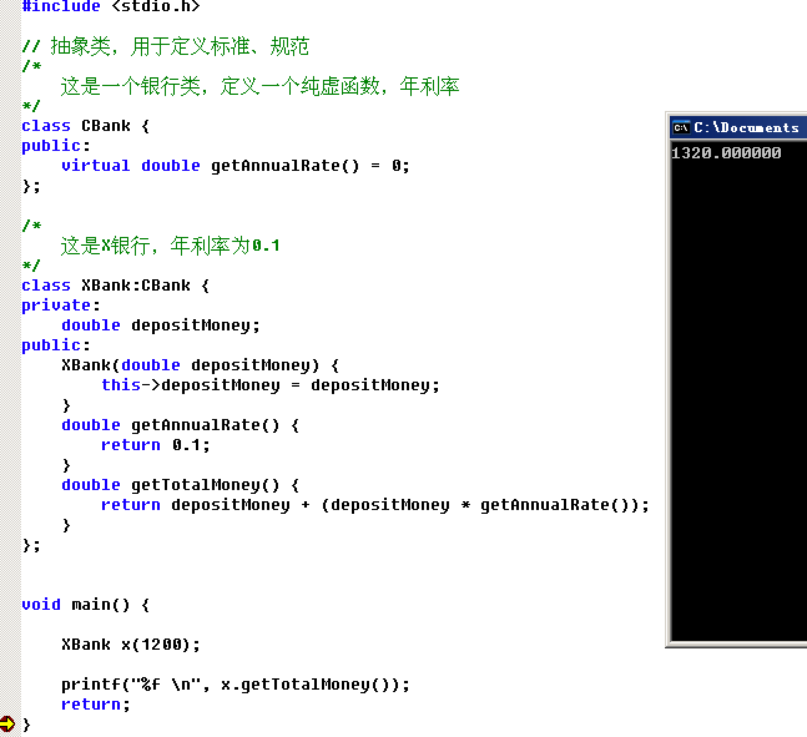
而如果不按照这种标准呢来，那么假如要统计所有的数据就会非常麻烦，不便于管理。
对象拷贝
我们通常存储对象，都用数组、列表之类的来存储，那如下所示我们使用数组来存储对象，但是在工作中发现这个数组不够用了，就需要一个更大的数据，但我们重新创建一个数组还需要把原来的数据复制过来；在C语言中可以使用函数来进行拷贝，直接拷贝内存，在C++中实际上跟C语言要做的事情是一样的，在C++中就称之为对象拷贝。
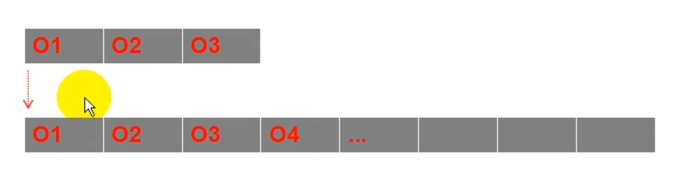
拷贝构造函数
如何在C++中拷贝构造函数，来看一下如下代码：

可以看见我们定义了一个类，然后创建了两个对象obj、objNew，但是第二个对象的语法很奇怪，传入的参数是第一对象，其实这就是默认拷贝析构函数。
其本质就是很简单的内存复制：

上面的内存复制是在栈中，而我们想在堆中去拷贝可以这样写：
CObject* p = new CObject(obj);如上所示，我们是通过拷贝析构函数在内存中创建了一个新的对象，而如果该类本身有一个父类，父类会被拷贝吗？我们写一段代码来论证一下：
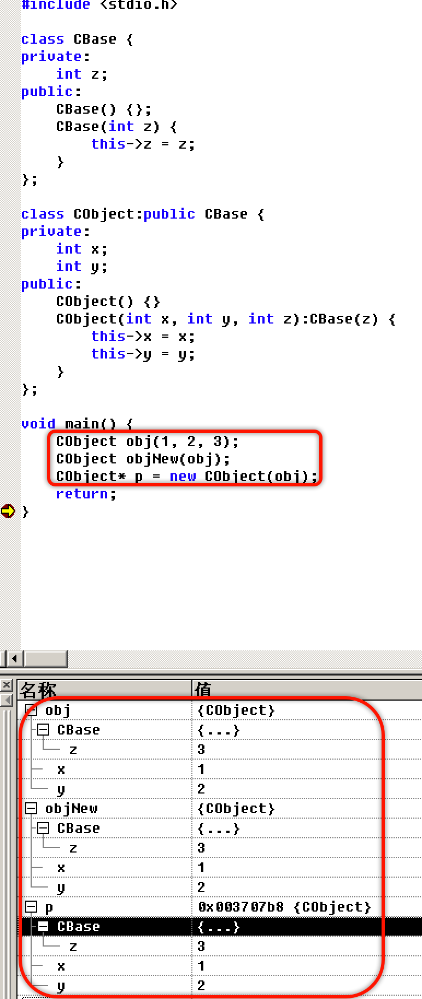
那么这段代码，拷贝构造函数不仅可以将当前对象的内容复制，还可以将父类的内容复制过来。
拷贝构造函数是编译器已经提供的，其已经非常成熟了，通常情况下是不建议自己写拷贝构造函数的，除非出现类中包含指针类型的成员，这种情况是需要自己重些拷贝构造函数的，因为拷贝构造函数只是会拷贝当前指针成员的值，并不会拷贝指针成员指向的内容。
所以这种拷贝方式，我们可以称之为浅拷贝；而如果可以做到能够复制成员的情况下，还可以将指针指向的内存地址复制过来，并自动申请一块新的内存提供，这种方式我们称之为深拷贝。
如果要实现深拷贝，我们就需要自己重写拷贝构造函数。
MyObject(const MyObject& obj) { m_nLength = obj.m_nLength; m_strBuffer = new char[m_nLength]; memset(m_strBuffer, 0, m_nLength); strcpy(m_strBuffer, obj.m_strBuffer);}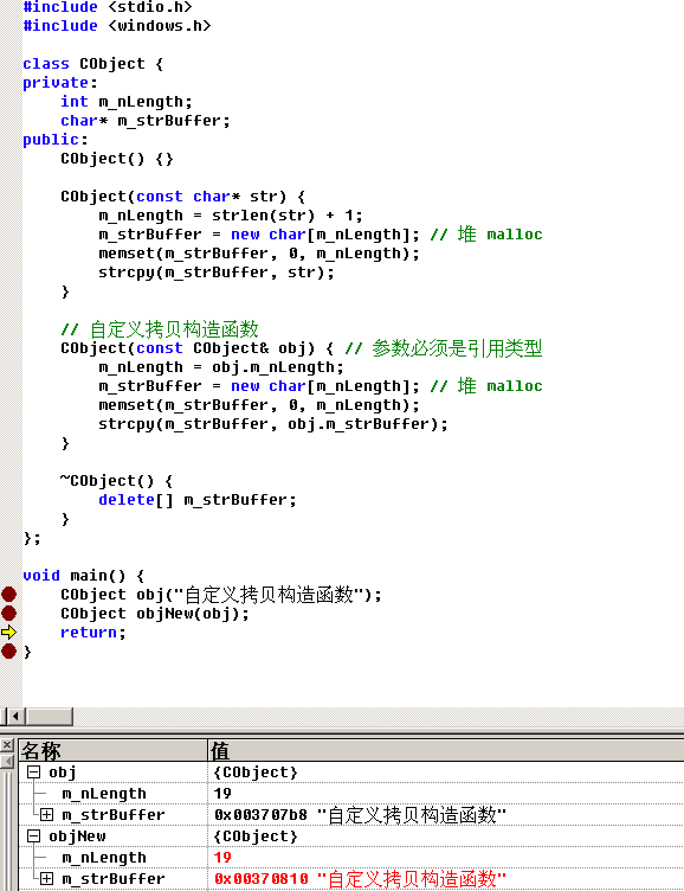
需要注意的是这个格式是固定的，不要自己「自由发挥」。
总结：
如果不需要深拷贝，就不要自己添加拷贝构造函数；
如果你天假了拷贝构造函数，那么编译器将不再提供，所有的事情都需要由新添加的函数自己来处理。
重载赋值运算符
上一章学习了如何通过拷贝对象函数的方式来实现对象拷贝，这里就来学习使用重载赋值运算符实现对象拷贝。
在C++中是允许我们在两个对象之间直接使用赋值运算符的：
CObject a(1, 2), b(3, 4);b = a;
那么赋值运算符实现的对象复制是否会当前复制对象继承的父类进行复制呢？
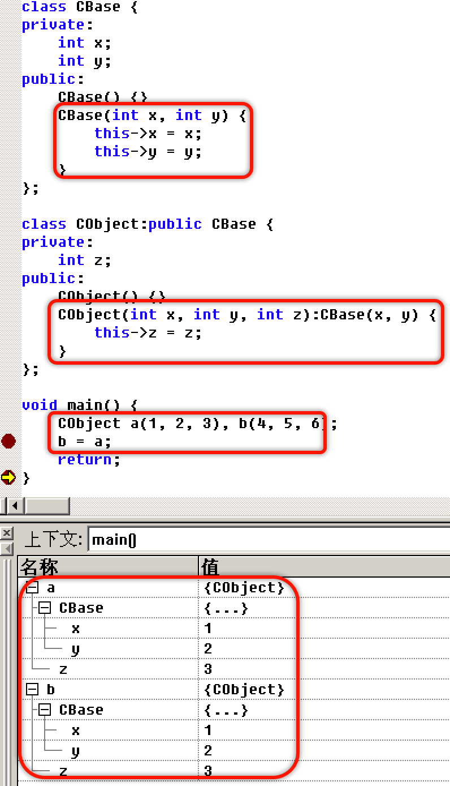
如上图所示，赋值运算符是可以复制父类的。
但是在这里赋值运算符是否就非常完美了呢？不是的，赋值运算符和拷贝构造函数是有相同缺点的，那就是其默认都是浅拷贝。
我们想要解决这个问题就需要重写一个赋值运算符，自己来实现深拷贝。
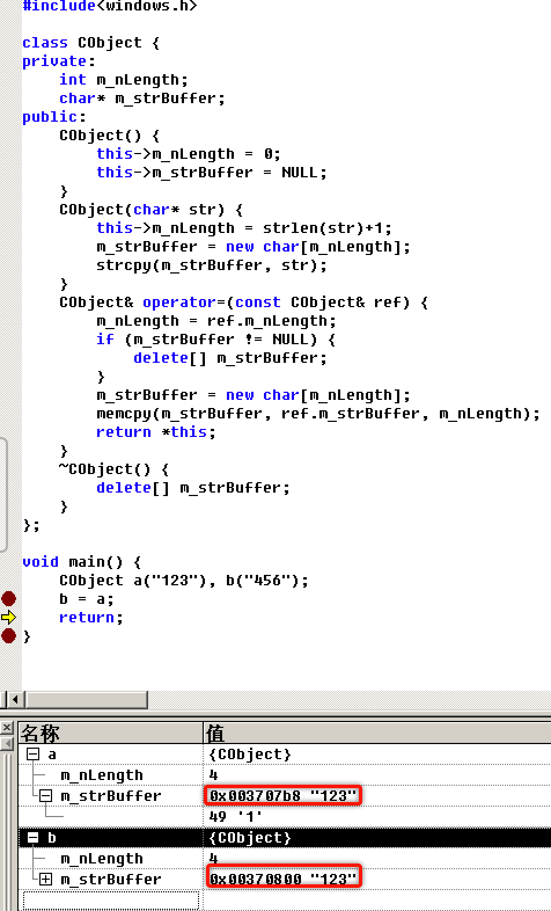
友元
友元可以理解为：朋友、元素；老师认为这个友元是C++中的一个垃圾，因为友元的存在破坏了面向对象的封装性，不推荐使用，之所以有这个章节是因为有人不了解这个概念。
注意：在一些新版本的C++编译器里面已经不再提供类似于友元这样的特性了。
大家都知道在C++中对象的私有成员，外部是无法访问的，这在面向对象中是很正常的，如果你想访问按照正常的逻辑你应该在类中声明成员函数去增删改查这个私有成员。
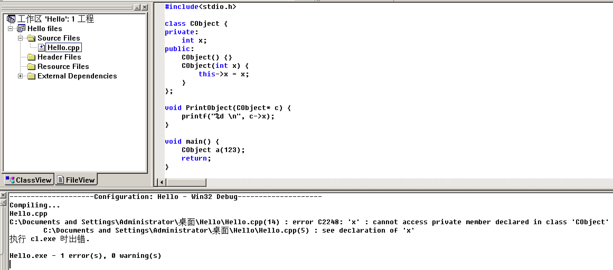
友元的诞生就是破坏了这个封装性，让你可以在外部去使用这个私有成员。
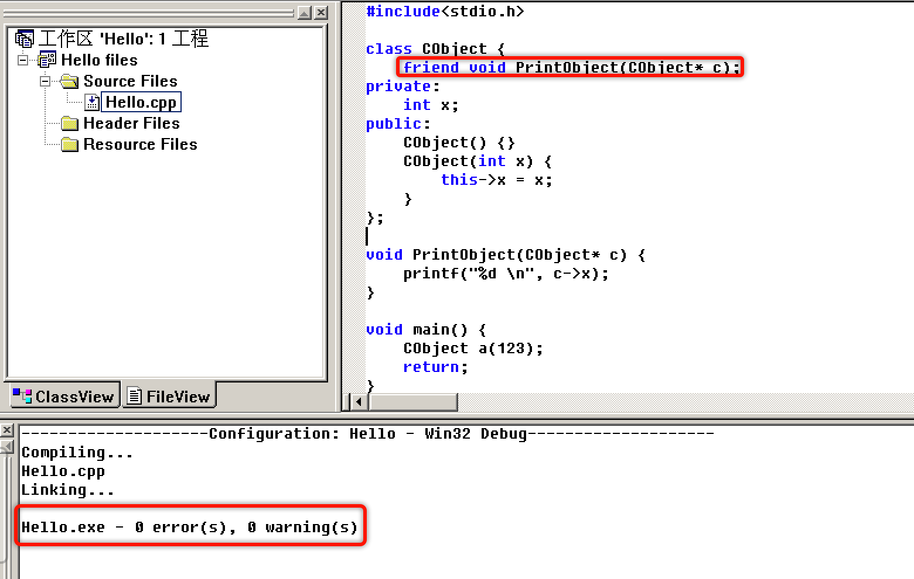
友元的语法就是：friend 返回类型 函数名(参数列表)
老师个人认为C++之所以有友元是因为这是C++作者面向过程的一种妥协，这是因为C++是先有的C才有的C++，而很多人已经很熟悉C语言的语法了，你这时候推出一个新的概念，是对开发者的不友好（代码重构、学习代码），所以要妥协。
刚刚举例说明的是友元函数，就是告诉编译器这个函数是我的朋友，可以访问我的任何成员。
除了友元函数，还有加强版的垃圾：友元类，如下是语法格式：
class CObject { friend class Test;private: int x;public: CObject() {} CObject(int x) { this->x = x; }};class Test {public: void Fun(CObject* c) { printf("%d \n", c->x); }};以上代码就是告诉编译器，Test是CObject的朋友，所以Test可以直接访问CObject的私有成员；但是要注意的是，这种访问是单向的，Test可以访问CObject，但反之则不行。
内部类
内部类，简单的说就是在别的类里面定义的类就是内部类。
大小：当前类和其内部类不存在包含关系，不会影响当前类的大小；

关系：两者之间不存在什么特殊关系，也无法访问对方的私有成员；
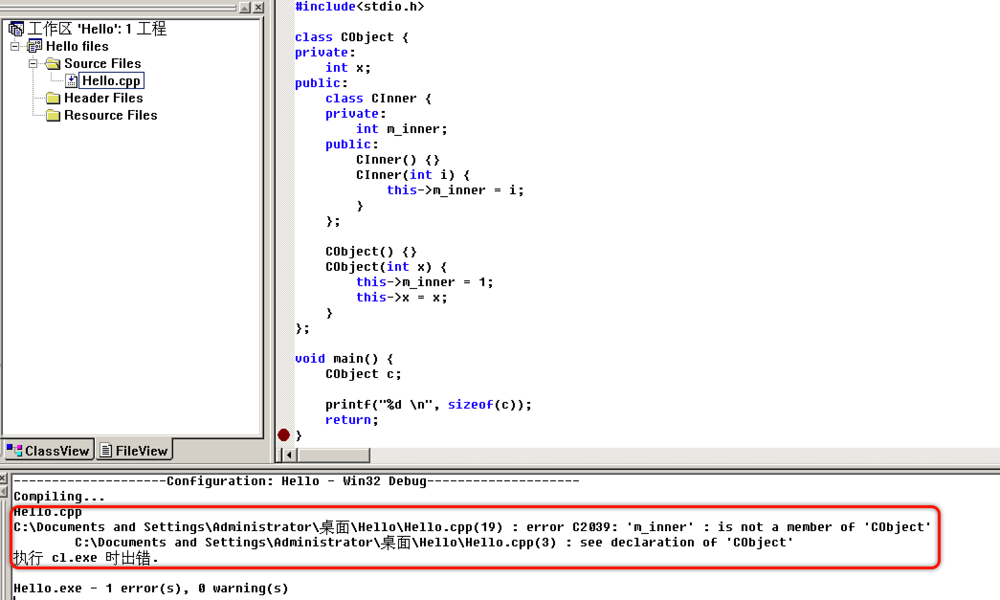
声明：声明创建内部类需要使用格式 → 类::内部类 名称;；
权限：如果你的内部类不想外部创建对象，那就定义到private内即可；而如果你用到这个内部类的情况非常的少，例如你只有一个成员函数需要使用到，那么完全可以定义到这个函数内；
作用：如果我们需要实现一些功能而用到一个类，但是其他的模块、类用不到，我们可以就把这个类写到当前所需要使用类中。（隐藏）
命名空间
命名空间主要是用来解决命名冲突的问题；比如你定义了一个函数叫Fun，而如果你还想定一个函数也叫Fn，这种情况下就可以使用命名空间来解决这个问题。
命名空间的关键词：namespace，其语法格式如下：
namespace 名称x { // 全局变量 // 函数 // 类}namespace 名称y { // 全局变量 // 函数 // 类}
调用也很简单，使用格式：命名空间名称::函数\变量\类
如果我们命名空间内的东西非常多，但是你要调用就必须要加上前缀，这时候你可以在代码的首行写：
using namespace x;但这也会引起命名冲突，如果命名空间x里面有一个Test函数，但是在正常代码中也存在Test函数，你想调用的是本身的该怎么办呢？实际上在C++中，你定义的所有东西都存在一个全局命名空间，而想调用可以使用如下语法：
::Test();static关键字
用static就是一个全局变量，只不过它是一个私有的全局变量。
在面向过程(没有对象的概念，用函数)中的static：
void Func() { static char strBuffer[0x10]; strcpy(strBuffer, "test");}用static声明的全局变量，只有当前函数能访问；我们可以看下反汇编代码来论证这是一个全局变量：
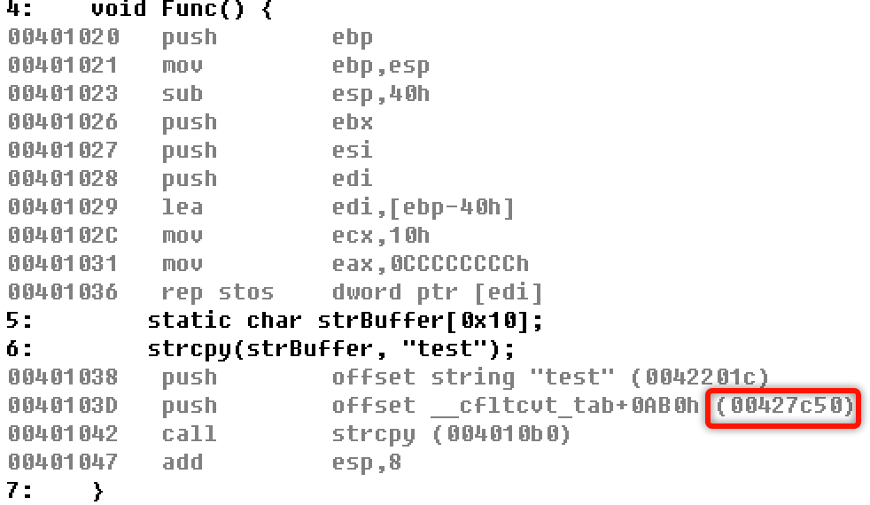
如上图所示的这个内存地址，很明显就是一个全局区的地址（这也就表示相同变量只能申请一次，不再接受第二次申请，也就表示全局变量应用场景，你可以用这个关键词来实现）。
面向对象设计中的static之静态数据成员：

面向对象设计中的static之静态成员函数：

static的经典应用：单子模式；有些时候我们希望定义的类只能有一个对象存在，这时候你该如何限制呢？实现思路有两个：
禁止对象被随便创建
保证对象只有一个存在
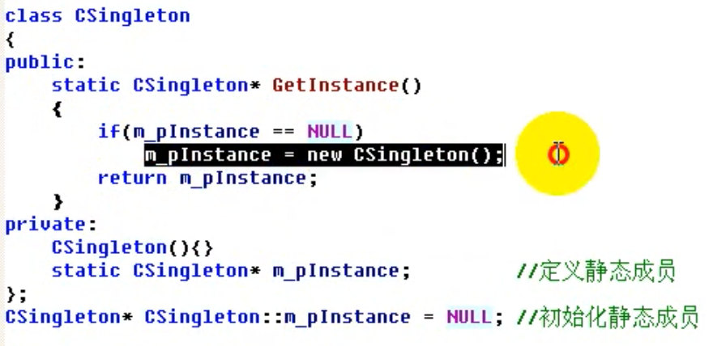